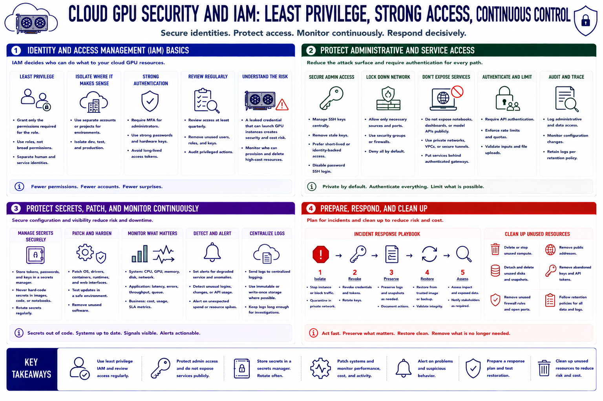

Security and Operations
Connecting to LMS... Progress: in progress

Narration
Identity and access management, or IAM, controls who can create, inspect, connect to, modify, and delete cloud resources. Grant people and services only the permissions required for their role. Use separate accounts or projects for isolation where appropriate, require strong authentication for administrators, and review access regularly. A leaked credential with permission to launch GPU instances creates both security exposure and immediate financial impact.
Protect administrative access. Manage SSH keys centrally, remove stale keys, and prefer short-lived or identity-backed access when available. Firewall rules should permit only necessary sources and ports. Do not expose notebook servers, dashboards, or model APIs publicly for convenience. Put services behind authenticated gateways, private networks, or secure tunnels, and require API authentication and rate limits for shared inference.
Store tokens, passwords, and application keys in a secrets-management service rather than images, scripts, notebooks, or shell history. Patch the operating system, drivers, containers, runtimes, and web interfaces through a tested process. Monitor configuration changes, login activity, service errors, GPU and memory utilization, latency, cost, and unexpected network traffic. Alerts should identify both degraded service and suspicious resource creation.
Prepare incident actions before they are needed: isolate the instance, revoke credentials, preserve appropriate logs, restore a trusted image, and assess exposed data. Delete or stop unused compute, detach public addresses, and remove abandoned disks, snapshots, keys, and firewall rules according to retention requirements. Operational hygiene closes the gap between a secure launch and a secure lifecycle.